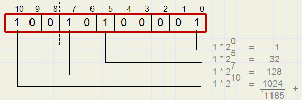

Een computer functioneert niet zonder stroom.
Bij elektriciteit heb je slechts twee keuzes: deze moet aan of uit.
Een elektriciteitsdraad voert wel of geen elektriciteit.
Je kunt deze twee keuzes ook weergeven als een ja of nee, waar of niet waar, en in computers zie je dit als 1 en 0.
De 1 houdt in dat er elektriciteit aanwezig is, terwijl de 0 aangeeft dat er geen elektriciteit is. Ongeveer 1 of 0 staat ook bekend als een 'bit'.
Een elektriciteitsdraad is dus samengesteld uit twee bits. Naarmate je meer elektriciteitsdraden verbruikt, zijn er dus meer bits beschikbaar.
Hoe meer bits je kunt inzetten, des te ingewikkelder data en informatie kunnen worden.
Met deze bits zijn we in staat om een binair systeem toe te passen.
Binair houdt in dat er slechts twee mogelijkheden bestaan.
Om dit toe te lichten, is het te vergelijken met het systeem dat we gebruiken wanneer we als mensen tellen: het decimale systeem.
Het decimale systeem is samengesteld uit tien cijfers.
0 tot 9 jaar.
Bijvoorbeeld bij het nummer 1981, hebben we in het verleden ontdekt dat elke positie in zo'n nummer een bepaalde waarde heeft.
In dit geval betreft de eerste 1 de 1000ste, de 9 de 100ste, wat hier 900 betekent, de 8 de 10e, wat hier dus 80, en de 1 is simpelweg een 1.
Bij elke stap naar links, vermenigvuldig je het aantal met 10. Het loopt dus als volgt: 1 tot 10 tot 100 tot 1000 tot 10000 en zo verder.

Het binaire systeem omvat uitsluitend twee cijfers.
1 tegen 0. In plaats van de vermenigvuldiging met 10 wanneer we een stap naar links nemen, doen we dit met 2.
De reeks verloopt dus zo: 1 – 2 – 4 – 8 – 16 en zo verder.
Bekijk het onderstaande nummer 11001 eens.
Het eerste cijfer aan de rechterkant staat voor een 1, de tweede voor een 2 en de derde voor een 4,
maar omdat er op de plaatsen van de 2 en 4 een 0 staat in plaats van een 1, is dat niet van belang.
Vervolgens krijgen we opnieuw twee keer een 1, namelijk 8 en 16.
Je telt alle plekken in de reeks waar een 1 voorkomt, en zo kom je tot een getal.
In deze situatie tel je dus 1 + 8 + 16 wat resulteert in 25 cijfers.
Zie hier een spel om met het binaire stelsel te oefenen en een plaatje voor toelichting: